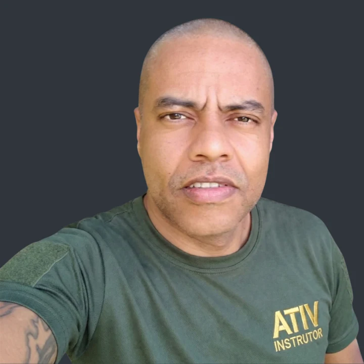

A confiança do cliente depende de quem está na escala.
Ele elogia um vigilante, pede que não o substituam e se preocupa quando outro assume. O contrato é com sua empresa, mas o padrão que deveria inspirar confiança parece depender de alguns nomes.
PROGRAMA DE DOUTRINA OPERACIONAL
Transforme a experiência da sua operação em conhecimento que permanece na empresa.
O PROBLEMA
Seu cliente contrata a sua empresa, não o seu melhor vigilante. Seja em um hospital, condomínio ou indústria, ele espera reconhecer o padrão de atuação da sua empresa, independentemente de quem esteja de serviço.
Se esse padrão depende de alguns profissionais excepcionais, o que acontece quando eles não estão lá?
Ele elogia um vigilante, pede que não o substituam e se preocupa quando outro assume. O contrato é com sua empresa, mas o padrão que deveria inspirar confiança parece depender de alguns nomes.
Um líder experiente orienta a equipe, resolve situações difíceis e corrige desvios. Mas, quando ele não está, as mesmas dúvidas reaparecem. O conhecimento existe — só não se tornou uma capacidade da empresa.
As reclamações se acumulam e o contratante começa a questionar a qualidade do serviço. Na hora de renovar, sua empresa pode ter o preço mais competitivo — e ainda assim perder espaço para quem transmite mais confiança.
A SOLUÇÃO
Atuamos onde identidade institucional, liderança e operação se encontram. Ouvimos a direção, o comercial, o RH e as lideranças operacionais para compreender o que a empresa promete, o que já funciona e o que precisa ser alinhado.
Nada de treinar pessoas sem alinhar o padrão da empresa: organizamos as referências para validação institucional e, conforme o escopo, desenvolvemos multiplicadores para ensinar, acompanhar e fortalecer sua aplicação.
A doutrina é da sua empresa. O programa nasce da sua realidade.
AS FRENTES DO PROGRAMA
Sua empresa já possui conhecimentos valiosos, construídos por quem enfrenta os desafios da operação todos os dias. A ATIV ajuda a reconhecer, organizar e transmitir esse conhecimento, desenvolvendo as capacidades necessárias para que a Doutrina Operacional se fortaleça na organização.
O conhecimento dos profissionais experientes merece ser reconhecido e preservado. Ajudamos a organizar o que a operação já aprendeu, transformando esse conhecimento em referências de atuação que possam ser compartilhadas e validadas pela empresa.
Não queremos tornar os líderes menos necessários. Queremos desenvolver sua capacidade de formar outros profissionais com o mesmo critério, comprometimento e consciência da missão. O líder multiplicador vai além de orientar e corrigir: ensina, desenvolve discernimento e acompanha a aplicação da doutrina.
Cada profissional traz experiências diferentes. A integração doutrinária ajuda quem chega a compreender a identidade, os valores e as referências de atuação da prestadora, independentemente do contrato em que irá trabalhar. Os POPs e as ordens de posto continuam orientando as particularidades de cada operação.
A experiência continua sendo construída todos os dias, nos diferentes postos. Aprendizados relevantes podem ser encaminhados à gestão para análise e eventual aperfeiçoamento das referências e da formação, mantendo a doutrina conectada à realidade operacional.
Cada empresa tem uma realidade. O programa parte dela.
As frentes são definidas e combinadas conforme as necessidades identificadas. A participação das áreas, a formação, os materiais, o acompanhamento e as entregas são estabelecidos no escopo acordado. A validação das referências permanece com a própria empresa.
MÉTODO ATIV
Não começamos treinando por treinar. Começamos entendendo como sua empresa opera, o que já funciona, onde o padrão se perde e o que precisa ser fortalecido. A partir disso, ajudamos a organizar referências, apoiar sua validação institucional e desenvolver meios para transmiti-las e aperfeiçoá-las na prática.
Reconhecer o que funciona, identificar necessidades e aprender com a operação real.
Transformar experiências, recorrências e aprendizados em referências que possam orientar a atuação.
Submeter as referências à liderança competente ou ao Comitê definido pela empresa.
Lideranças ensinam, orientam e observam a aplicação, gerando novos aprendizados para reiniciar o ciclo.
O aprendizado de campo faz o ciclo recomeçar.
A experiência alimenta a doutrina. A doutrina orienta a formação. A prática revela o que pode ser aperfeiçoado.
As etapas organizam o método. A profundidade, a duração, os materiais, a participação das áreas e a continuidade são definidos conforme o escopo de cada empresa.
No programa, essa dificuldade orienta a organização das referências e o desenvolvimento de quem precisa transmiti-las.
O QUE PERMANECE
A experiência dos seus profissionais se transforma em materiais que ajudam a orientar a operação, transmitir o conhecimento e preservar o padrão da empresa.
O QUE SUA EMPRESA RECEBE
A identidade, os valores e os padrões de atuação da empresa reunidos em uma referência institucional.
Instruções claras sobre como agir em situações específicas, respeitando as necessidades de cada operação.
CAPACIDADES DESENVOLVIDAS CONFORME O PROGRAMA
Além dos documentos, a doutrina precisa ser ensinada e aperfeiçoada na rotina da empresa.
Líderes preparados para ensinar, orientar e desenvolver outros profissionais.
Pessoas e instrumentos para a empresa continuar transmitindo e aperfeiçoando sua doutrina.
A abrangência dos materiais e o desenvolvimento das capacidades são definidos na proposta de cada empresa.
Profissionais diferentes. Uma mesma identidade operacional.
Para que o contratante reconheça sua empresa não apenas pelo uniforme, mas pela maneira como seus profissionais atuam.

QUEM CONDUZ
2º Tenente Veterano, com trajetória na Força Aérea Brasileira e na Polícia Militar do Estado de São Paulo, incluindo atuação na Força Tática.
Sua formação em Filosofia complementa a experiência operacional. Na ATIV, essa combinação orienta o trabalho com lideranças: compreender as razões dos procedimentos, desenvolver discernimento e transmitir o padrão de atuação da empresa.
ANTES DE CONVERSARMOS
O programa inclui a elaboração do Caderno de Doutrina Operacional e de Procedimentos Operacionais Padrão (POPs), organizados a partir da realidade da empresa e submetidos à sua validação. Conforme as necessidades e o escopo, também pode envolver formação de multiplicadores, integração de novos profissionais, evolução profissional e acompanhamento da aplicação.
Não. A ATIV apoia a organização das referências e o desenvolvimento da Doutrina Operacional. A direção e as lideranças da empresa mantêm a responsabilidade pela gestão, pela aprovação dos padrões e pela aplicação nos contratos. A preparação específica de cada posto também permanece com a prestadora.
A partir das referências existentes, das necessidades da empresa, do público e dos objetivos acordados. A proposta apresenta as etapas, as entregas, as responsabilidades, o acompanhamento e as condições do programa.
Não. A duração depende da necessidade identificada. Uma demanda delimitada pode ser atendida em um projeto pontual, inclusive em aproximadamente um mês, desde que o escopo e as validações necessárias sejam viáveis. Trabalhos mais amplos podem exigir vários meses ou acompanhamento continuado. A conversa inicial orienta o levantamento necessário e a proposta personalizada.
Toda contratação do Programa de Doutrina Operacional inclui o Caderno de Doutrina Operacional e POPs definidos conforme as necessidades da empresa. A abrangência, os formatos, o cronograma de entrega e as demais frentes — como formação de multiplicadores e instrumentos de continuidade — são detalhados na proposta. A empresa valida suas próprias referências.
A proposta da ATIV é de capacitação complementar e desenvolvimento organizacional. Não é apresentada como substituição da formação, reciclagem ou extensão regulamentada de vigilantes.
Desenvolvemos as lideranças para compreender a finalidade das orientações e as necessidades dos postos, conectando-as à identidade da empresa, às ordens de posto e aos POPs aplicáveis. Trabalhamos situações representativas escolhidas com a empresa. Suas lideranças conduzem a aplicação nos contratos e encaminham à gestão o que exige alinhamento com a empresa ou com o cliente. A preparação específica de cada contrato permanece com a empresa de segurança.
Partimos do conhecimento e das referências que sua empresa já utiliza. O programa ajuda a organizar, transmitir e sustentar essa identidade, com participação e validação da liderança. Quando uma referência ainda precisa ser construída ou atualizada, isso é definido no trabalho conjunto.
O PRÓXIMO PASSO
Conte o que hoje dificulta a consistência da sua operação. Na conversa inicial, compreenderemos o contexto e definiremos se é necessário um levantamento adicional antes de apresentar a proposta.
O escopo e a duração são definidos conforme as necessidades da sua empresa — de intervenções pontuais a programas continuados de desenvolvimento da Doutrina Operacional.